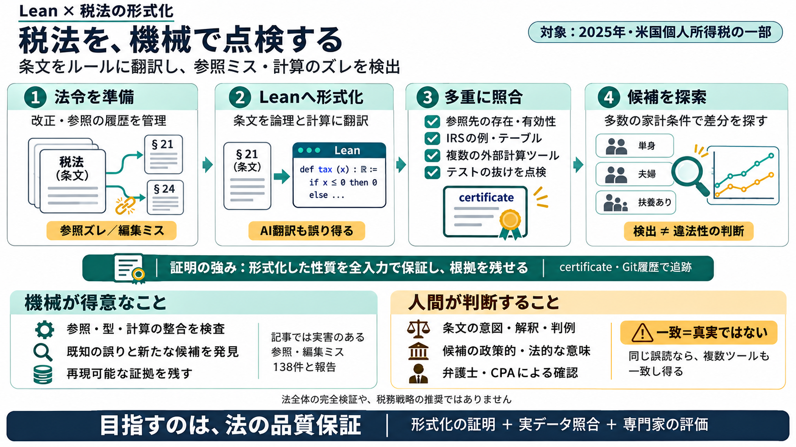

Formalizing the US tax code | Lexifina
Schedule 8812 pays more than the statute allows. This is a gap between the IRS form and the law, not a plan. The statute…

法令（Internal Revenue Code）をLeanで形式化し、参照ミスや計算ロジックの取り違えを検出する試みです。
法令は改正・参照・編集の連鎖で、参照先のズレや段落指定ミス、計算ロジックの取り違えが起き得ます。
Leanは、条文を論理と計算のルールに落とし込み、型検査・テストで誤りを“証明可能な形”にします。
形式化モデルは、参照整合性の確認と、IRSの例・外部ツール比較を通じて誤りを炙り出します。
記事では、Leanの検査で“本物のfault”を証明でき、既知領域に加えて未知の抜け道候補も得たと主張しています。
法文の参照ズレは、Leanで“参照先が存在する／有効である”ことを継続検査し、証明書（certificate）として扱える点が特徴です。
4つの計算方式がほぼ一致する場合もあれば、不一致が範囲に収まる場合もあり、外部ツール側の論理バグも示されたといいます。
一致したモデルを“税計算のオラクル”として扱い、多数の家計シナリオを無計画に近い形で探索します。
自動検査（参照チェック・再構築・比較）は強力ですが、findingが何を意味するかは政策・法的評価が必要です。
形式化の対象は2025年の個人所得税・特定部分に限られ、法全体（Title 26）の完全カバーではありません。
Leanで証明されるのは「翻訳された形式化の論理」なので、条文の読み取り（翻訳）の設計方針がズレれば誤りも証明され得ます。
形式化は“法のバグ探し”を検査可能にし、監査・品質保証にもつながる可能性があります。
Schedule 8812 pays more than the statute allows. This is a gap between the IRS form and the law, not a plan. The statute…
[1:20] elements. Otherwise, you're not going to be able to claim the credit. Now, it doesn't mean you won't get any kind…
2025 Instructions for Schedule 8812 (Form 1040) Credits for Qualifying Children and Other Dependents Section references …
ここで意識的に守ったことがひとつあります。Elegant Lean を書くときは既存の実装を参照せず、条文だけを出発点にして Claude に書かせたことです。実装のコードや設計資料を見ながら形式化すると、どうしても同じ読み方をなぞってしま…
証明が保証するのは、Lean上で書いた命題（写した仕様）のとおりであることまでであり、条文の読み方自体が誤っていれば、証明が通っても「条文どおり」であることは保証されない。 「全入力」が指すのはLean上の2つのモデル（Ruby-like…